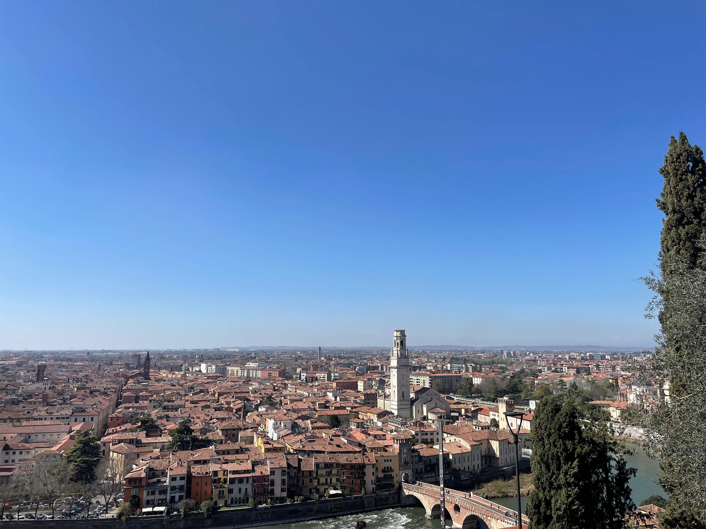
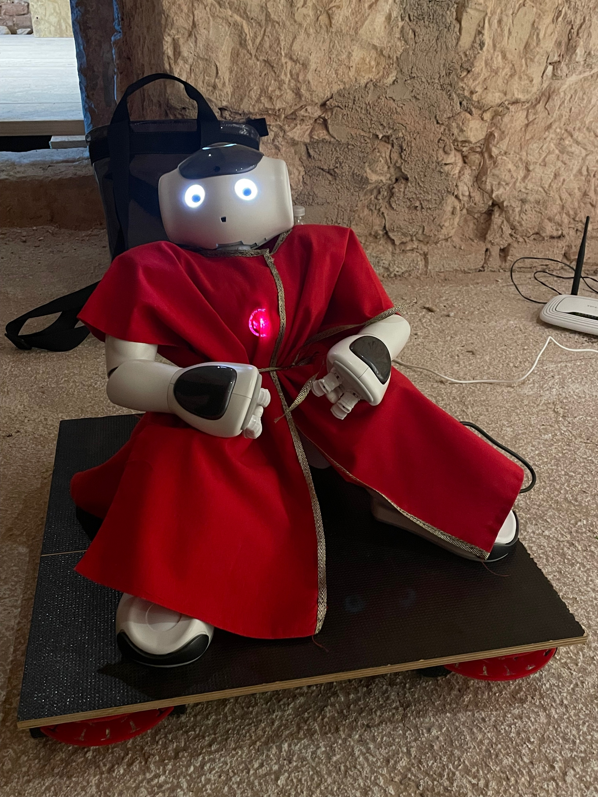
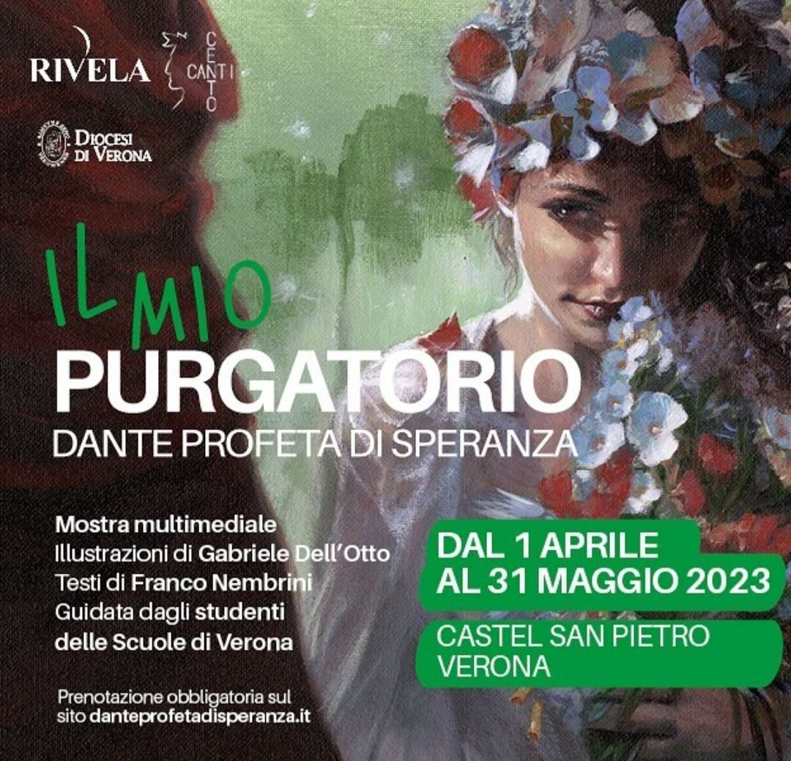

Il nostro progetto si pone come principale obiettivo quello di creare una mostra accessibile a tutti sfondando idealmente tutte le barriere fisiche e intellettuali.
Le opere esposte sono legate a un unico filo conduttore: il Purgatorio di Dante. Il tema è la continuazione del progetto iniziato nel 2022 e riguardante l’Inferno; un’altra caratteristica comune ai due progetti è NAO, un robot umanoide che ha un ruolo attivo nell’esposizione orale e nella spiegazione della mostra, quasi prendendo per mano il visitatore.
Castel San Pietro, sulle colline veronesi, fa da splendida cornice alla mostra aprendo per la prima volta le porte a un evento culturale.

Nao e Arduino
L’ospite d’onore è NAO, che si muove su un supporto mobile guidato da Arduino (una piattaforma hardware composta da una serie di schede elettroniche dotate di un microcontrollore).
Per l’occasione il robot umanoide indosserà gli abiti rossi del Sommo Poeta.
La piattaforma su cui è seduto NAO/Dante è composta da quattro motori, collegati a un Arduino, ciascuno dei quali mette in moto due ruote. Il supporto trasporta NAO nella stanza in cui sono esposte le opere, tutte sulla stessa parete disposte seguendo l’ordine dei canti del Purgatorio.
Sia NAO sia Arduino sono stati programmati dal gruppo coding del Team R32, mentre altri studenti del gruppo si sono occupati della parte social intesa come campagna pubblicitaria e comunicazione del progetto.

Il Purgatorio multimediale
La mostra del 2023, rispetto a quella precedente che aveva come tema l’Inferno, si focalizza soprattutto sull’inclusione: infatti il percorso è pensato in particolare per coloro i quali normalmente si trovano di fronte a degli ostacoli quando si tratta di fruire di temi e ambienti diversi da quelli quotidiani e facilmente accessibili a persone normodotate.
I visitatori hanno a disposizione un tablet, sul quale è stata installata un’applicazione per il riconoscimento delle opere: attraverso la AR (realtà aumentata) basta semplicemente inquadrare l’opera che si ha di fronte per poterne ascoltare la descrizione.
Appena il dispositivo avrà riconosciuto l’immagine, invierà un segnale che farà partire NAO e la sua piattaforma. Raggiunta l’opera, la base si ferma e NAO inizia la sua spiegazione accompagnando i visitatori in un viaggio multimediale nel Purgatorio.
Il nostro obiettivo però non è solamente la diffusione dei contenuti della mostra, ma anche e soprattutto garantire a tutti la possibilità di poterne apprezzare la bellezza. Per questo abbiamo ideato soluzioni differenti, per soddisfare le esigenze di tutti.

Una mostra inclusiva
Le persone ipovedenti hanno a disposizione una tavoletta braille che le accompagna nel percorso di visita e contemporaneamente possono ascoltare la spiegazione delle opere.
Le persone non udenti trovano, in fianco ai testi esplicativi delle opere, un video di una persona che commenta i contenuti attraverso il linguaggio dei segni. Per questo un grazie particolare va a Fiorella Rubele che ci ha permesso di metterci in contatto con Alessandro Zambon, interprete dei video.
Anche NAO è stato programmato per favorire un percorso inclusivo: quando arriva di fronte a un’opera, mentre lui la descrive su uno schermo posto nella sala vengono proiettate le pagine del sito web progettato dal Team R32 che affiancano una foto dell’opera in oggetto al video della persona che la racconta con il linguaggio dei segni e al testo ad essa relativo.
Questo testo è in carattere Arial per aiutare i ragazzi con DSA (Disturbi Specifici dell’Apprendimento).
La mostra presenta anche degli accorgimenti pensati specificatamente per i bambini, che hanno la possibilità di porre a NAO dei quiz al termine della descrizione di ciascuna opera; in questo modo si rende la loro visita più ammaliante e interattiva.
È stata pensata anche una visita virtuale per persone impossibilitate a recarsi sul luogo della mostra.